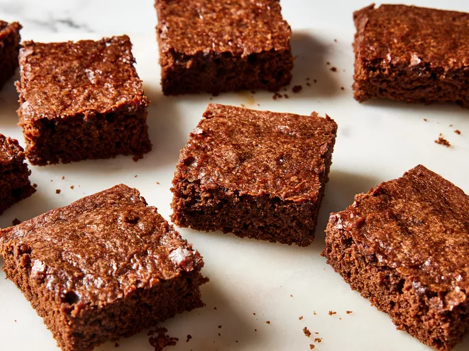

Vegan Brownies Recipe

Description
These vegan brownies are made with cocoa powder for a rich and gooey chocolaty treat.
If you prefer brownies that are a little more solid, you can bake the brownies for longer
than the recommended time. Great for people with egg or dairy allergies, too!
Vegan Brownie Ingredients
These are the ingredients you’ll need to make this homemade vegan brownie recipe:
- Flour: This vegan brownie starts with all-purpose flour.
- Sugar: Make sure the package is labeled “vegan,”
as some store-bought white sugars aren’t strictly vegan.
- Cocoa powder: You’ll need ¾ cups of good-quality unsweetened cocoa powder.
- Baking powder: Baking powder acts as a leavener,
which means it helps the vegan brownies rise.
- Salt: Salt enhances the overall flavor of the brownies,
but it won’t make them taste salty.
- Water or coffee: Use a cup of hot water (or a cup of brewed coffee for more flavor).
- Oil: Vegetable oil keeps these vegan brownies nice and moist.
- Vanilla: Vanilla extract takes the flavor up a notch.
How to Make Vegan Brownies
You’ll find the full, step-by-step recipe below —
but here’s a brief overview of what you can expect when you make vegan brownies:
- Whisk the dry ingredients in a large bowl.
- Add the wet ingredients and stir until the batter is blended.
- Pour the batter into a prepared baking dish and spread evenly.
- Bake in the preheated oven until the top is no longer shiny and the center feels just set.
- Let the brownies cool before cutting them into squares.